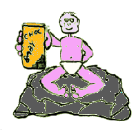
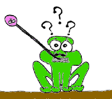
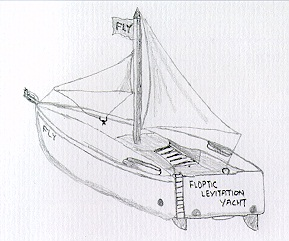

| |

| |

| |

| |

| |

|

It was during one of those freak storms where by all known infants became obssessed with baby choc and leptic frogs forgot how to jump, that Biradel suffered a most terrible fate upon that hands of the evil Queen of Multipacks.

Queen of Multipacks had already been ravaging the land in a quest to find her long lost son the terrible Ivan Invicible. Although he had a terribly horrible name, his nature was not close to being invincible. In fact he was quite easily scared due to the lack of his menegerial "y" chromosones in the laptic region of the sceptic brain.Well, Ivan was really trying to settle down at this moment in time with his newly found wife, Evylin Anomoly. She was the typical magicaly enhanced women. (A new spell founded in ad121212: it gave magicians the power to do magical surgery, first pioneered in the states of pentacular.) They were just getting into bed when.... bang crash , Queen came popping into the room a random locations. She was suffering from Re-appearing hiccups, how terrible for her because this gave Ivan and his wife a chance to escape. They took the liberty to use the F.L.Y transport, Floptic Levitation Yacht.

Anyway the lore had been evolved in this particular evening because the Re-appearing hiccups had forced an single mana lore into the forbidden gates of the hairy lore hunter. He came into being and from this day there is a new threat to the land. Horsforth, as this hunter is known, is a terrible being for he has he power to suck all magical power away from the sages and mages.The Queen eventually got rid of her hiccups as they dissapated over 9 months, she became so scared of eveer getting them again that she now doesn't drink anything, she just dissapears all food and drink into her stomach. Have you ever had re-appearing hiccups? Well you don't want to just imagine you were bathing and h..h..h..hicccup. oops!
Ivan set up a new home in the Outer Hebrides, and called himself the Hermit, and the hunter is still at large. BEWARE.
 Story Index
Story Index |
top of page
 |

 Previous Chapter Previous Chapter |
Next Chapter  |